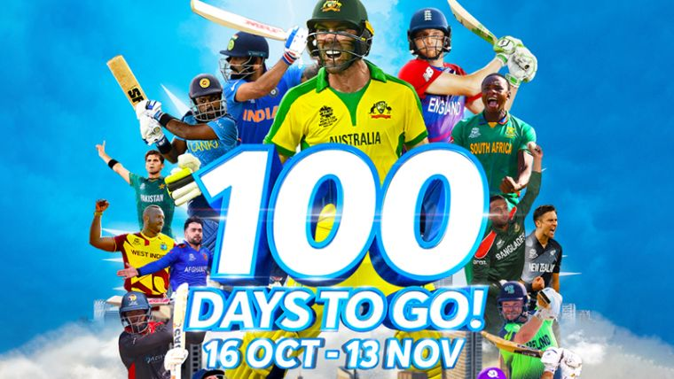
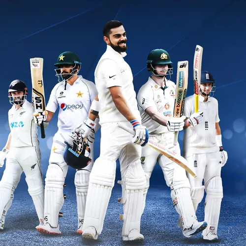
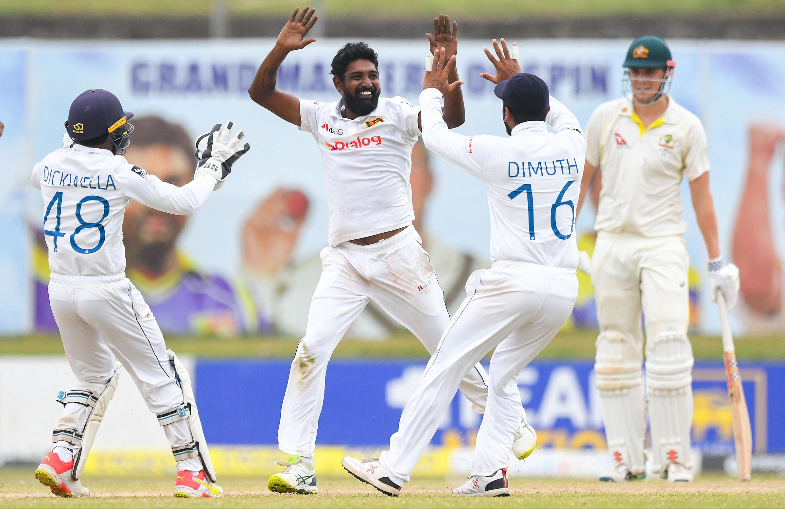
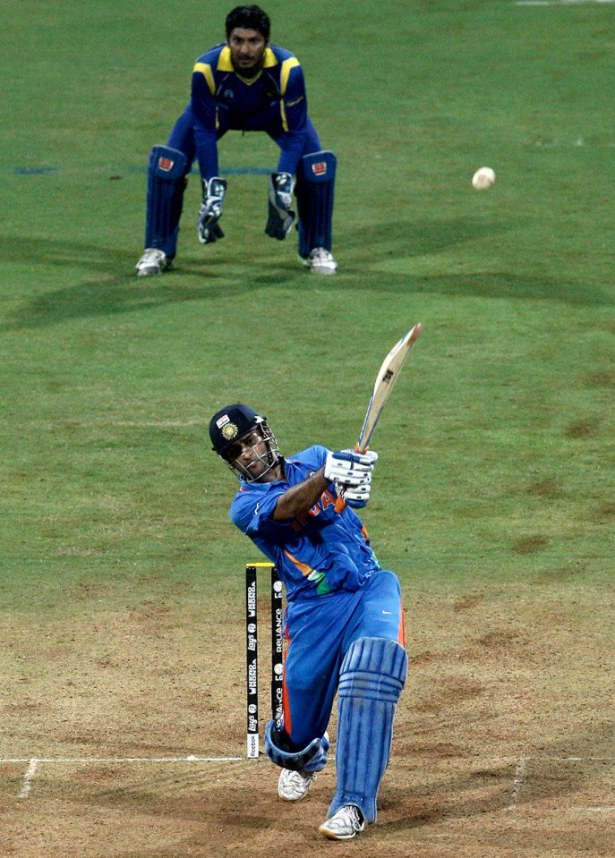

|  |  | Cricket is the second most popular sport in the world. There are over 100 national who are connected to cricket in some form or the other. Cricket was orignated in England. As of 2022 there are 12 full member countries of the ICC. These are the only teams who are currently to play official matches. ICC means International Cricket Council. These 12 Full member Cricketing nations are: |
| World T20 in Australia | The FAB Four Club |
|
|  |  | |
| Top Five Best figers on Test Debut | MSD hits Winning Six India Win the World Cup after 28 years |